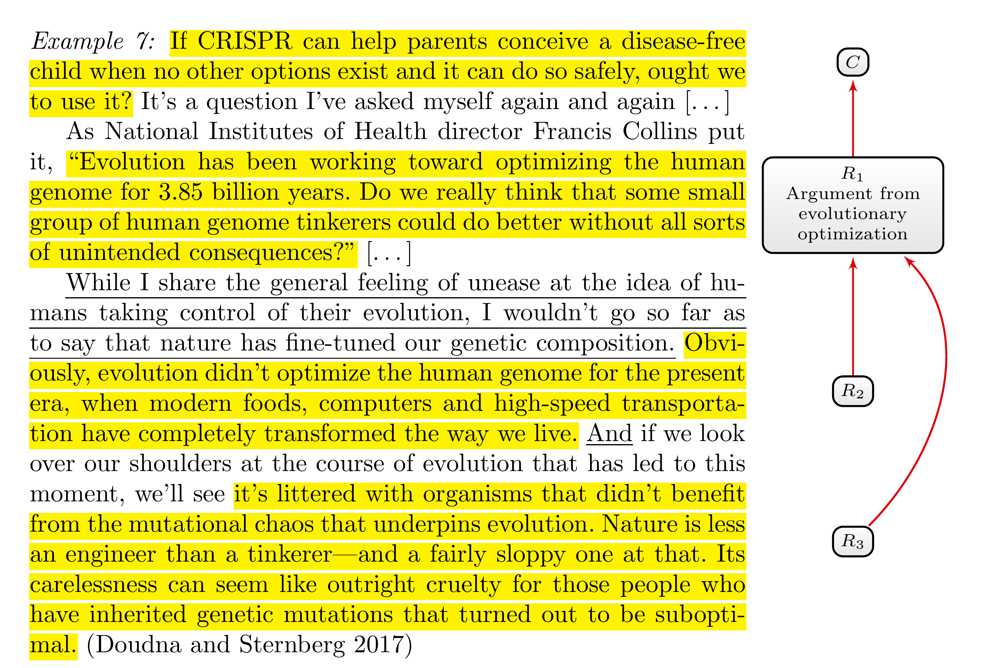
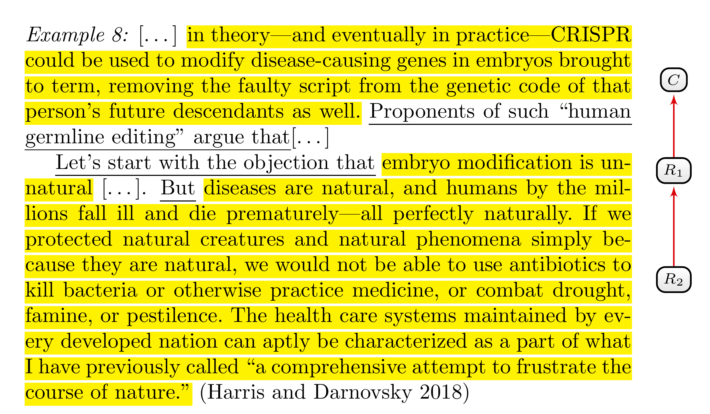
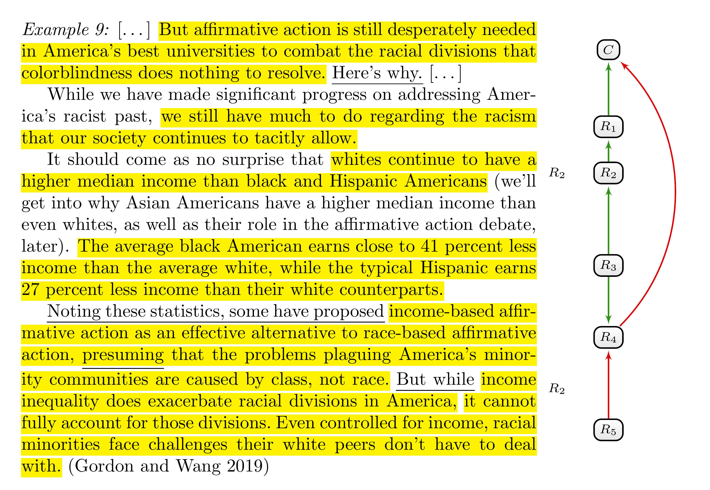
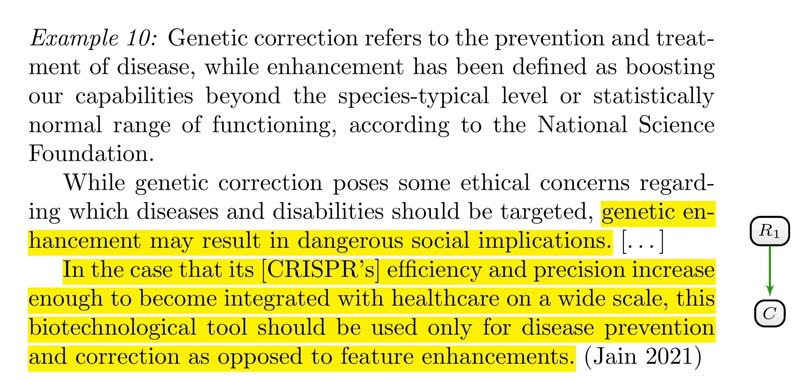
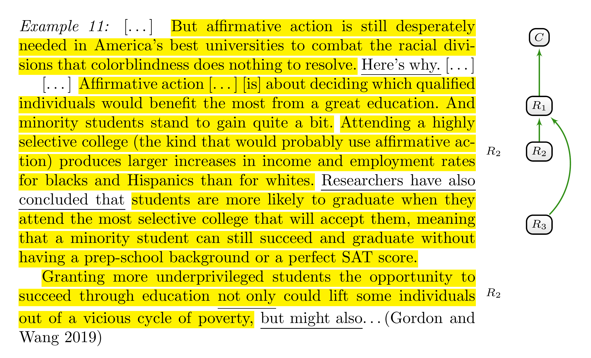
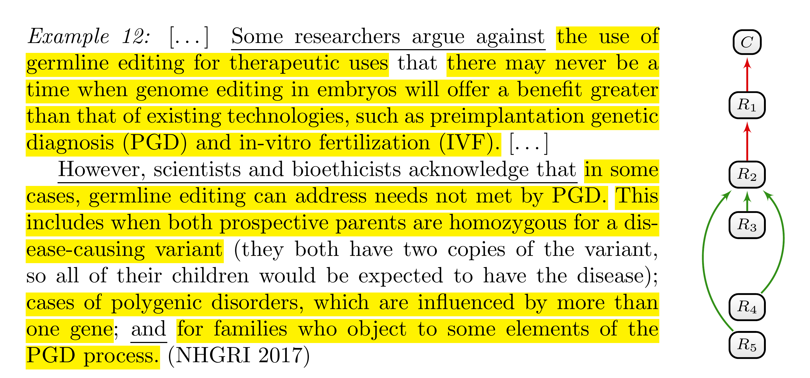
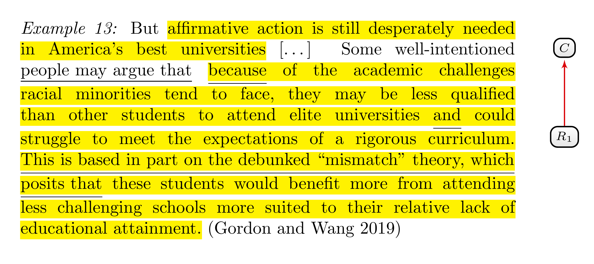
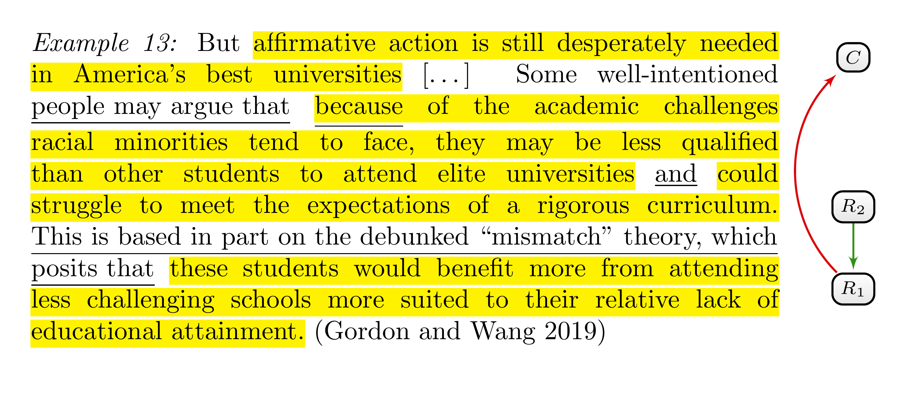
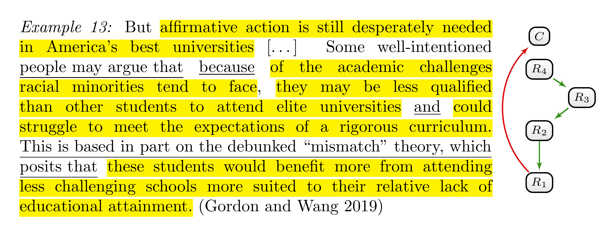

5 Individuation of Argumentative Components
Categorising one particular text segment as argumentative unit means categorising it as the formulation of one particular argumentative component. But where does the formulation of an argumentative component exactly start and end? Should we, for instance, count text segments that repeat or reformulate reasons as part of the reason’s text segment itself? How do we tell apart different but similar reasons? All these questions pertain to the issue of individuating argumentative components. The following examples will motivate some tips that will help you, as an annotator, to individuate reasons.
Figure 5.1 contains an example with a suggested annotation of argumentative components and their accompanying support and attack relations. In the example, Doudna responds to the argument from evolutionary optimisation against germline editing, which we encountered in Example 4.2. Let us understand the suggested interpretation of the text snippet step by step.

It is not difficult to determine the exact boundaries of the argumentative units in the first two paragraphs. The text snippet starts with a question, which indirectly formulates the main claim in question.1 We already understood the rhetorical question of the second paragraph as an objection to germline editing (\(R_1\)). According to this objection, germline editing will have unintended side effects that are to be expected when “human genome tinkerers” try to do better than evolution. The point about evolutionary optimisation seems important for understanding the main idea of the argument. Accordingly, we can consider the sentence preceding the question as part of the reason against germline editing.
The third paragraph is more challenging. The author begins by making explicit her stance on the argument from evolutionary optimisation—namely, that she is not convinced by it. The first sentence does not itself formulate a reason, but it can be considered a linguistic cue that the following sentences present reasons against the argument from evolutionary optimisation. The author goes on to elaborate on two different ways in which our genome is not optimised. This and the used linguistic cue ‘and’ motivate us to interpret the paragraph as formulating two different points—that is, two different objections. The first objection (\(R_2\)) alludes to a lack of genetic fit for our modern world and spans more than one sentence. The second objection (\(R_3\)) points to genetic diseases, which, according to the author, can hardly be described as the result of optimisation. We can regard all three sentences beginning with the ‘and’ as relevant to understanding the main idea of the objection. The main point is that evolution is based on random genetic variations—in contrast to intentional alterations—that yield “suboptimal” outcomes at the individual level. All three sentences contribute to understanding this one point, which motivates us to consider them as formulating a single objection. Only the metaphor about looking over one’s shoulder is irrelevant to the reason itself and should, consequently, not be annotated as part of the reason.
Thus, the example in Figure 5.1 shows that one argumentative unit does not necessarily span exactly one sentence.
An argumentative component can be formulated by one sentence, a subclause of a sentence, or stretch over more than one sentence.
5.1 Identifying Different Parts of an Argumentative Component
The last clarification shows that it is essential to have some criterion to determine where an argumentative unit starts and ends. The intuitive analysis of the second objection in Figure 5.1 (\(R_3\)) suggests counting text segments that help us understand an argumentative component’s main point or its relevance as part of the argumentative unit. Those text segments should, therefore, be annotated as belonging to the argumentative unit. Typical examples of linguistic cues that signpost such clarifications are ‘This argument rests on the assumption that …’, ‘… presuming …’ and ’This argument is based on the grounds that…’ However, often you won’t find such explicit linguistic cues. The following tip provides a rule of thumb and accompanying questions to help identify the different parts of an argumentative unit.
If sentences or subclauses must be taken together (or are intended to be taken together) to understand an argumentative component’s main idea or relevance, they should be considered as part of the corresponding argumentative unit. In other words, if it makes sense to imagine a sentence or subclause as an answer to one of the following questions—Why is that a reason? Why is that relevant? What is the point of that?—they are part of the argumentative unit.
In Figure 5.2, you will find an example that illustrates how to apply Tip 5.1. The main claim (\(C\)) is attacked by an argument from naturalness (\(R_1\)), which is itself the target of a presented refutation (\(R_2\)). According to Tip 5.1, we can regard all three sentences as part of a single objection to the argument from naturalness (\(R_1\)), since the last two sentences seem to elaborate on the objection that diseases are natural.

One way to apply Tip 5.1 is to use text segments from the given text snippet and reformulate them in the form of an imagined dialogue. If it is possible to plausibly use sentences or clauses as answers to the questions ‘Why is that a reason? Why is that relevant? What is the point of that?’, we can regard them as part of the reason.
The following dialogue starts with the first sentence of the refutation (\(R_2\)) of the argument from naturalness (\(R_1\)):
A: “But diseases are natural, and humans by the millions fall ill and die prematurely—all perfectly naturally.”
B: “Why is that a reason against the argument from naturalness?”
A: “Because, if we protected natural creatures and natural phenomena simply because they are natural, we would not be able to use antibiotics to kill bacteria or otherwise practice medicine, or combat drought, famine, or pestilence.”
B: “And? Why is that relevant?”
A: “[Because we do use antibiotics to kill bacteria.] The healthcare systems maintained by every developed nation can aptly be characterized as a part of what I have previously called a comprehensive attempt to frustrate the course of nature.”
\(B\) uses the questions of Tip 5.1 to understand better or challenge the relevance of \(A's\) objection to the argument from naturalness. \(A\) answers by repeating the annotated sentences in the second paragraph. This, in turn, justifies counting them as part of \(A's\) objection.
5.1.1 Scattered Argumentative Components
In the last two examples (Figure 5.1 and Figure 5.2), we identified reasons that extend over more than one sentence. Since these sentences are contiguous, the corresponding argumentative unit spans over all these contiguous sentences. It can, however, also happen that sentences or clauses that explain the main point and the relevance of an argumentative component are not contiguous, as the example in Figure 5.3 shows.

The authors argue that race-based affirmative action is still needed (the main claim \(C\)) as a means to reduce the still existing racism in the United States (\(R_1\)). In the third paragraph, the authors go on to elaborate on the still existing higher incomes of white Americans as compared to black and Hispanic Americans (\(R_2\)), for which they provide further statistical evidence (\(R_3\)).2 Naturally, we can interpret these income differences as a supporting reason for contemporary racism without there being linguistic cues to corroborate this interpretation. But why are income differences relevant to racism? The authors provide one answer themselves. As the first clause in the last sentence clarifies, income differences “exacerbate racial divisions.” Therefore, we can regard this clause as explaining the relevance of \(R_2\) and should annotate it as belonging to \(R_2\).
The example illustrates that one reason (\(R_2\)) can spread over non-contiguous sentences and clauses. There is one practical difference in the case of non-contiguous sentences and clauses. If the sentences and clauses that belong to an argumentative unit are contiguous, you annotate these sentences as one text segment by determining the start and endpoint accordingly. However, if these sentences and clauses are non-contiguous, you have to annotate different text segments as belonging to one argumentative unit.
5.1.2 Illustrative Examples
According to Tip 5.1, elaborations on the argumentative component’s main idea or relevance should be annotated as part of the corresponding argumentative unit. However, not every text segment that explains something in connection to the argumentative component in question should be annotated this way:
Sentences or clauses that provide mere illustrative examples or contextual information and explanations that merely explain the meaning of relevant concepts should not be annotated as belonging to an argumentative unit.

In the example of Figure 5.4, the author provides contextual knowledge that should not be annotated as an argumentative unit. The author’s main claim is formulated at the end of the text. She argues for confining germline editing to therapeutic uses and banning it for enhancement. One of her reasons against genetic enhancement invokes the possibility of “dangerous social implications.” While her explanations of how the treatment of diseases differs from enhancement help clarify the reasoning, they are not necessary to grasp the main point. To understand the main idea of the reason, we simply need to know that enhancement differs from therapy and that enhancement is said to have certain dangerous consequences. Since the second sentence implies both points, we do not need the first sentence to understand the main idea of the reason.
5.1.3 Reformulations
A similar but slightly different case to clarifications and elaborations of argumentative components are text segments that reformulate or repeat an argumentative component. An author might, for instance, explain an already mentioned reason in different words to foster a better understanding or to remind the audience of an important point. Similarly, an author might begin by summarising the main idea of a reason and later provide further details of the same point. In line with clarifications of an argumentative component’s relevance (Tip 5.1), you should consider text segments that are reformulations of the same argumentative component as belonging to that reason:
If sentences or clauses are (or are intended to be) reformulations or repetitions of an argumentative component, they should be considered as belonging to the corresponding argumentative unit.
Typical linguistic cues for repetitions and reformulations include:
- ‘In other words, …’
- ‘As x puts it …’
- ‘To put it differently, …’
- ‘As I mentioned earlier …’
- ‘As stated above, …’

Similarly to sentences and clauses that elaborate on the relevance of argumentative components, repetitions and reformulations may be contiguous or non-contiguous to the first text segment that describes the argumentative component. The example in Figure 5.5 depicts an annotation of an argumentation structure with a non-contiguous reformulation of the second reason (\(R_2\)). This reason is formulated as a justification for the claim that minority groups can benefit more from education at elite universities than other groups (\(R_1\))—namely, that they would benefit more from it in terms of income increase and employment opportunities. After formulating another benefit (\(R_3\)), the authors reformulate the second reason in the third paragraph. By using the phrase “not only \(\dots\), but also \(\dots\)” the authors begin to pick up an already formulated point (\(R_2\)) and then move on to add another reason (\(R_3\)).3
5.1.4 References
Reformulations and repetitions usually have an explanatory function. They help the audience understand an argumentative component, remind them of its basic idea, and might describe it from another perspective. In contrast to repetitions and reformulations, mere references do not contribute to the understanding of an argumentative component and should not be annotated as part of the corresponding argumentative unit.
Mere references to argumentative components should not be annotated as part of the corresponding argumentative unit.
A reference to an argumentative component can be formulated, for instance, by using demonstrative determiners such as ‘this’, whose referents are context-dependent, by using proper names such as ‘the slippery slope argument’, or by using definite descriptions such as ‘the first argument mentioned by Clint’. References to argumentative components can be used after the author elaborates on them, for instance, to signpost attack and support relations, or even before the author elaborates them, for instance, to announce argumentative components. The following linguistic cues encompass some possibilities to refer to argumentative components:
- ‘… This reason is not convincing since…’,
- ‘… The most prominent objection to the argument from x is …’,
- ‘All of these objections can be refuted.’, ‘There are two relevant arguments: the argument from x and the argument from y …’ and
- ‘After clarifying the stance of y, I will analyse her strongest argument.’
5.2 Identifying Different Argumentative Components and their Relationships
Tip 5.1 and Tip 5.3 will help you as an annotator identify all text segments that belong to the argumentative component. Another important challenge is the correct identification of contiguous text segments corresponding to different argumentative components reasons.
The example in Figure 5.6 begins with an objection (\(R_1\)) against germline editing for therapeutic uses (\(C\)). The objection rests on the premise that there is an alternative—namely, preimplantation genetic diagnosis (PGD) in combination with in vitro fertilisation (IVF)—that has no downside compared with germline editing. According to the second reason (\(R_2\)), this alternative is, in fact, not an alternative for all prospective parents. The presented refutation of \(R_1\) is supported by three reasons (\(R_{3-5}\)). So why should we regard these nearly contiguous text segments as three different supporting reasons for \(R_2\)? The chosen grammatical form is one hint. The authors use an enumeration to list points that seem to be on equal footing.

Additionally, Tip 5.1 and Tip 5.3 do not suggest considering the text segments as one reason: Neither of these points clarifies the relevance of the others (Tip 5.1), and neither of these points is a reformulation of the others (Tip 5.3). On the contrary, the points are independent. Every one of them supports, or is intended to support \(R_2\) without needing the other one; every one of them can be imagined as part of a dialogue in which a challenger successively asks for additional reasons that support the claim that PDG and IVF are not an alternative for all prospective parents (\(R_2\)).
To summarise these considerations into another tip:
If sentences or clauses provide or are intended to provide independent justification for some claim, or if they are intended to provide support on their own, they should be considered as independent argumentative components. In other words, if it makes sense to imagine each sentence or clause as an answer to the question ‘Can you give me an additional reason/objection?’, they correspond to different argumentative units.
Tip 5.1 and Tip 5.3 tell you to count reformulations of an argumentative component and clarifications of its relevance as part of the corresponding argumentative unit. Sometimes, it is not easy to distinguish a justification for a reason from a clarification of the reason. A text segment presented as a reason for another reason might look at first glance like a repetition or clarification of the second reason’s main point. In this case, this apparent repetition should not be considered as part of the reason it supports. Instead, you should treat both text segments as independent reasons and categorise the first as supporting the second. In other words, you have to split the longer text segment into different ones and use the support relation to categorise the argumentative relation between them. Since it might be challenging to distinguish justifications for reasons from reformulations and clarifications of reasons, you should be attentive to text segments that appear to be one complex reason that stretches over many sentences.
With Example 5.1, we will formulate an additional tip that will not only help you spot the difference between reason-supporting reasons and reformulations of reasons, but will also be useful in analysing the attack and support relations between text segments in general.
But affirmative action is still desperately needed in America’s best universities […] Some well-intentioned people may argue that because of the academic challenges racial minorities tend to face, they may be less qualified than other students to attend elite universities and could struggle to meet the expectations of a rigorous curriculum. This is based in part on the debunked “mismatch” theory, which posits that these students would benefit more from attending less challenging schools more suited to their relative lack of educational attainment. (Gordon and Wang 2019)
After formulating the main claim, the remaining text snippet is introduced with a clear linguistic cue for an argumentation (‘people may argue that’). The last sentence univocally suggests that this argumentation is intended as an objection to affirmative action at universities. But is it adequate to interpret the paragraph as containing only two justificatory relevant text segments, one that represents the main claim (\(C\)) and one that represents a complex objection to it (\(R_1\)) as indicated in Figure 5.7? Or is it a more complex reasoning that has to be broken down into different parts?

To answer this question, we have to understand the role of the additional linguistic cues. They pose at least two questions:
- What does the ‘because’ indicate? A presented justification, a causal explanation or both (see Tip 4.3)?
- How are we supposed to interpret ‘This is based in part on …’? Does it indicate a clarification or some form of support relation between the text segments that precede and follow this phrase? If this phrase has to be interpreted as expressing a support relation, we should identify at least two reasons in the paragraph.
Our natural language is too flexible to answer such questions with simple and precise instructions. Confronted with such a complex case, you should, instead, employ the following rule of thumb:
Reformulate the basic idea of argumentative components in your own words to identify support and attack relations. Use the following principles to guide your reformulation:
- Explicitness: Your reformulation should be explicit about the source and target of support and attack relation.
- Accuracy: Stay as close as possible to the original formulation and the known or hypothesized intention of the author.
- Charity: If there are different and conflicting possibilities to reformulate the argumentative component’s basic idea, choose the formulation that results in the most plausible and convincing reasoning.
The idea of this tip is to make your understanding of the reasoning explicit. Explicitness requires reflecting on which text segment is being presented as a justification for which other text segment. That is why you should use a formulation that explicates the relational character of argumentative components.
You could, for instance, use one of the following schemata to explicate a support relation between two argumentative components y and x:
- ‘x because y.’
- ‘x since y.’
- ‘y is a reason for x.’
and the following to explicate an attack relation between y and x:
- ‘x is not true because y.’
- ‘x is implausible because y.’
- ‘y is a reason against x.’
Let us now apply Tip 5.6 to the example from Figure 5.7. How can we formulate the main idea of the objection (\(R_1\))? One suggestion is the following:
Students from racial minorities (= “these students”) would benefit from attending less challenging schools since they could struggle to meet the expectations of a rigorous curriculum at an elite university.
This reformulation catches an important point of the reasoning and is formulated using one of the suggested forms (‘x since y’). However, the clause following ‘since’ does not directly formulate a reason against affirmative action since x says nothing directly about affirmative action. It is a reason justifying that the described students should not attend elite universities. Fortunately, the context closes this gap: Affirmative action is supposed to enable students from minority groups to attend elite universities. However, since it would be better for these students not to attend elite universities, affirmative action is not needed, or so the argument goes.
This consideration suggests separating the reasoning into two reasons:
Affirmative action is not needed since students from racial minorities would benefit from attending less challenging schools. (\(C\) is not true since \(R_1\))
and
Students from racial minorities (= “these students”) would benefit from attending less challenging schools, since they could struggle to meet the expectation of a rigorous curriculum at elite universities. (\(R_1\) since \(R_2\))
According to this interpretation, the paragraph formulates a chain of reasons as illustrated in Figure 5.8: The last annotated text segment represents a reason (\(R_1\)) and is an objection to the main claim \(C\), which is represented by the first text segment. The text segment following the ‘and’ is another reason (\(R_2\)), which is presented as a justification to support the first reasons \(R_1\).

The preliminary result is a much more adequate analysis of the argumentation structure than the first interpretation. The remaining task is to clarify the role of the text segment that precedes the ‘and’. It seems to be justificatory relevant. But so far, we have not used it in our reformulation of the reasoning structure. Additionally, we must still analyse the role of the linguistic cue ‘because’. Does it indicate a justification, a causal relationship or both? The indicator word ‘and’ only suggests that the clauses that are linked together by the ‘and’ are independent points.
Again, it might help to reformulate the presented text segment as reasons (see Tip 5.6). The following reformulations continue to interpret the argumentation structure as a chain of reasoning. We could ask why these students struggle at elite universities (\(R_2\)), and the text seems to answer by pointing to their lesser academic qualification (\(R_3\)); we could ask why they are less qualified, and the text seems to answer by pointing to academic challenges minorities have to face before university (\(R_4\)). In one of the suggested standard forms:
Students from racial minorities could struggle to meet the expectation of a rigorous curriculum at elite universities, since they may be less qualified than other students. (\(R_2\) since \(R_3\))
Students from racial minorities may be less qualified than other students, since they tend to face academic challenges before university. (\(R_3\) since \(R_4\))
Figure 5.9 illustrates the resulting final interpretation of the argumentation structure. We started with a preliminary analysis by identifying the main claim and a longer text segment whose internal structure raised some questions (see Figure 5.7). We then used the tip to reformulate the main idea of reasons and objections. By making explicit what is presented as a justification and what is presented as justified, we were able to analyse the argumentation structure more deeply and identify four separate text segments that correspond to a chain of reasons (\(R_1-R_4\)).

In applying Tip 5.6, you must be faithful to the text. That means that your reformulations of reasons must not deviate too much from the author’s formulations and that the reformulation does not distort the author’s intended meaning. Instead, your reformulations should stay as close as possible to the text. In particular, you should not add new information that is not present in the text, and you should be able to identify the text segments that correspond to your reformulations.
Consider the following example. Above, we formulated the attack between the first reason and the main claim as follows:
Affirmative action is not needed since students from racial minorities would benefit from attending less challenging schools. (\(C\) is not true since \(R_1\))
Now, it might make sense to insert another reason step \(R^*\) between \(C\) and \(R_1\) in the following way:
Affirmative action is not needed since it is supposed to help students from racial minorities, which it doesn’t. (\(C\) is not true since \(R^*\))
Affirmative action is supposed to help students from racial minorities, which it doesn’t, since students from racial minorities would benefit from attending less challenging schools. (\(R^*\) since \(R_1\))
Now, we have formulated the additional reason \(R^*\) that attacks \(C\) and is supported by \(R_1\). However, no text segment corresponds to this reason. Faithfulness to the text demands the use of reformulations that make it possible—and preferably easy—to identify the text segments that correspond to reasons.
Literature
You will find more information on indirectly and implicitly formulated claims in Section 7.1.2 and Section 7.1.5.↩︎
Alternatively, we could regard both non-contiguous text segments (the third and fourth annotation) as one reason. On this interpretation, the fourth text segment is not a presented justification for the third text segment but rather a reformulation that adds numerical details of what is meant by the latter. See Tip 5.2 below.↩︎
There are, as often, alternative interpretations of the text. What we categorised as a reformulation can, for instance, be interpreted as a repetition of both points expressed by \(R_2\) and \(R_3\). After all, the higher income (\(R_2\)) presupposes that the individual who is lifted out of poverty graduates (\(R_3\)).↩︎